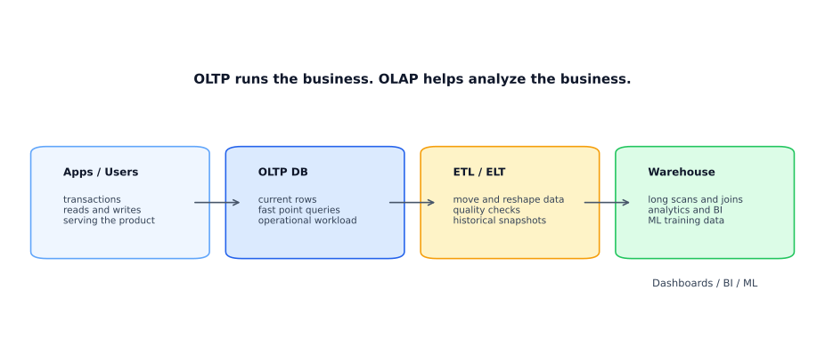
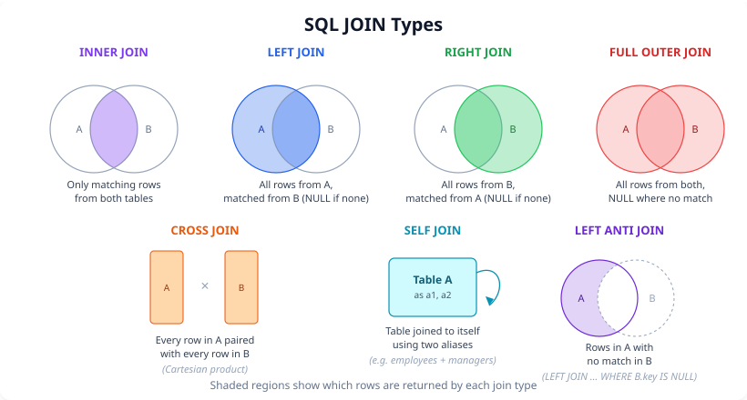
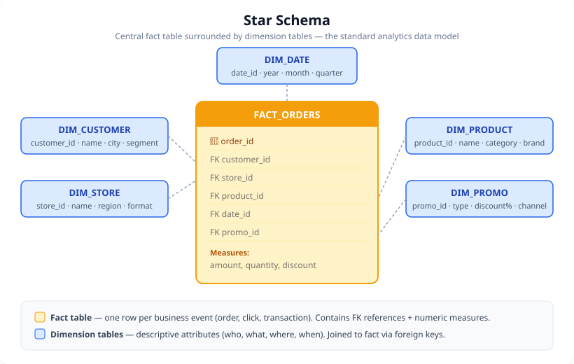
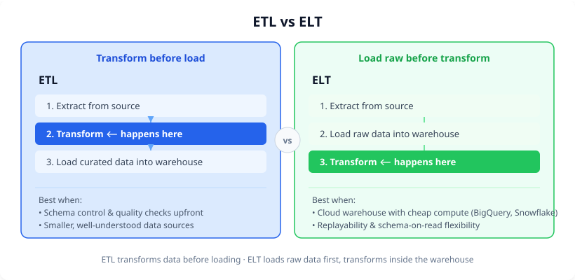

Explore this chapter with hands-on visualizations: SQL JOIN Visualizer, Window Functions, Query Execution Plan
Every ML system depends on data infrastructure. Before you can train a model, you need to understand where data lives, how it is structured, and how to query it efficiently.
This chapter builds in two parts. First: the architecture of data systems — when to use relational databases, warehouses, data lakes, and NoSQL stores. Second: the SQL skills a data scientist actually uses in practice, from basic aggregations to window functions and analytics patterns.
What you will learn:
| Section | Topic |
|---|---|
| 15.1 | Database fundamentals: OLTP, OLAP, warehouses, lakes |
| 15.2 | SQL basics: SELECT, WHERE, GROUP BY, ORDER BY |
| 15.3 | SQL JOINs: inner, left, right, full, self |
| 15.4 | Window functions: ranking, running totals, lag/lead |
| 15.5 | Common data science SQL patterns |
| 15.6 | Warehouse schema design: star, snowflake, partitioning |
| 15.7 | NoSQL: key-value, document, wide-column, graph |
| 15.8 | Big data concepts: ETL vs ELT, batch vs streaming, Spark, Dask |
Prerequisites: Basic Python (Chapter 3). No prior database experience required.
Every data system is designed for a dominant workload. The two fundamental workloads are operational and analytical.

| Aspect | OLTP | OLAP |
|---|---|---|
| Purpose | Run the business | Analyze the business |
| Queries | Short reads/writes on current rows | Long joins, scans, aggregations |
| Data scope | Current, detailed, normalized | Historical, consolidated, denormalized |
| Users | Applications, end users, ops | Analysts, BI, data teams, ML pipelines |
| Latency goal | < 10 ms | Seconds to minutes |
| Scale dimension | Write throughput, concurrency | Read throughput, scan speed |
| Examples | MySQL, PostgreSQL, Aurora | Snowflake, BigQuery, Redshift, Athena |
Key: OLTP = run the business. OLAP = analyze it. Never run heavy analytical queries directly on your production OLTP database — it slows down operations for everyone.
| Concept | Data warehouse | Data lake |
|---|---|---|
| Schema | Schema on write — enforced at load time | Schema on read — raw data, interpreted at query time |
| Data type | Structured, curated | Raw: structured, semi-structured, unstructured |
| Query engine | SQL | SQL via query engine (Athena, Spark) or custom code |
| Use cases | BI, reporting, dashboards | ML training data, data exploration, raw logs |
| Examples | Snowflake, BigQuery, Redshift | AWS S3 + Glue, Azure Data Lake, GCS |
When to use which:
| Need | Best fit |
|---|---|
| Dashboards, reporting, historical analytics | Data warehouse |
| Raw logs, images, audio, ML training data | Data lake |
| Curated analytics + raw ingestion | Lake + warehouse (lakehouse pattern) |
| Operational app reads/writes | OLTP relational database |
Relational databases organize data into tables with defined schemas and enforce referential integrity via foreign key constraints.
Key properties:
Common choices:
| Database | Best for |
|---|---|
| PostgreSQL | Open-source; excellent for analytics + app workloads |
| MySQL / MariaDB | Web applications; high write throughput |
| Amazon Aurora | Managed MySQL/PostgreSQL compatible; high availability |
| SQLite | Embedded; development and testing |
SQL is the language of data. Every analyst and data scientist uses it daily. This section builds from the foundation.
SELECT column1, column2, ..
FROM table_name
WHERE condition
GROUP BY column
HAVING aggregate_condition
ORDER BY column DESC
LIMIT n;Execution order (different from write order): 1.
FROM — identify the table 2. WHERE — filter
rows before grouping 3. GROUP BY — aggregate into groups 4.
HAVING — filter groups after aggregation 5.
SELECT — compute output columns 6. ORDER BY —
sort results 7. LIMIT — restrict row count
Key:
WHEREfilters rows;HAVINGfilters groups. UseWHEREbefore aggregation to avoid expensive post-aggregate filtering.
Every query below operates on the same small dataset. Follow along to see exactly what each clause does.
Sample data — orders table:
| order_id | customer_id | category | amount | status | created_at |
|---|---|---|---|---|---|
| 1 | 101 | Electronics | 250 | completed | 2024-01-10 |
| 2 | 102 | Books | 35 | completed | 2024-01-15 |
| 3 | 101 | Electronics | 180 | pending | 2024-02-03 |
| 4 | 103 | Clothing | 90 | completed | 2024-02-14 |
| 5 | 102 | Electronics | 410 | completed | 2024-03-01 |
| 6 | 101 | Books | 22 | cancelled | 2024-03-10 |
| 7 | 104 | Clothing | 150 | completed | 2024-03-22 |
SELECT + WHERE + ORDER BY + LIMIT — “Show me the top 3 orders over $100”:
SELECT order_id, customer_id, amount
FROM orders
WHERE amount > 100
ORDER BY amount DESC
LIMIT 3;Result:
| order_id | customer_id | amount |
|---|---|---|
| 5 | 102 | 410 |
| 1 | 101 | 250 |
| 3 | 101 | 180 |
GROUP BY + aggregate functions — “Revenue and order count per category”:
SELECT category, COUNT(*) AS orders, SUM(amount) AS total
FROM orders
GROUP BY category
ORDER BY total DESC;Result:
| category | orders | total |
|---|---|---|
| Electronics | 3 | 840 |
| Clothing | 2 | 240 |
| Books | 2 | 57 |
HAVING — “Only categories with total revenue over $100”:
SELECT category, SUM(amount) AS total
FROM orders
GROUP BY category
HAVING SUM(amount) > 100;Result:
| category | total |
|---|---|
| Electronics | 840 |
| Clothing | 240 |
↑ Books (57) is filtered OUT because HAVING runs after GROUP BY.
CASE WHEN — “Bucket each order into a value tier”:
SELECT order_id, amount,
CASE
WHEN amount >= 200 THEN 'high'
WHEN amount >= 100 THEN 'medium'
ELSE 'low'
END AS tier
FROM orders;Result:
| order_id | amount | tier |
|---|---|---|
| 1 | 250 | high |
| 2 | 35 | low |
| 3 | 180 | medium |
| 4 | 90 | low |
| 5 | 410 | high |
| 6 | 22 | low |
| 7 | 150 | medium |
-- All orders over 100
SELECT order_id, customer_id, amount
FROM orders
WHERE amount > 100
ORDER BY amount DESC
LIMIT 10;
-- Distinct values
SELECT DISTINCT status FROM orders;
-- Null handling
SELECT * FROM customers WHERE email IS NULL;
SELECT * FROM customers WHERE email IS NOT NULL;-- Revenue by product category
SELECT
category,
COUNT(*) AS order_count,
SUM(revenue) AS total_revenue,
AVG(revenue) AS avg_revenue,
MIN(revenue) AS min_revenue,
MAX(revenue) AS max_revenue
FROM orders
GROUP BY category
ORDER BY total_revenue DESC;Common aggregation functions:
| Function | Returns |
|---|---|
COUNT(*) |
Total number of rows |
COUNT(col) |
Non-null values in column |
SUM(col) |
Sum of values |
AVG(col) |
Mean of values |
MIN(col) |
Minimum value |
MAX(col) |
Maximum value |
STDDEV(col) |
Standard deviation |
-- Categories with more than 100 orders and revenue over 50,000
SELECT
category,
COUNT(*) AS order_count,
SUM(revenue) AS total_revenue
FROM orders
GROUP BY category
HAVING COUNT(*) > 100
AND SUM(revenue) > 50000
ORDER BY total_revenue DESC;-- String functions
SELECT UPPER(name), LOWER(email), LENGTH(description)
FROM customers;
-- Date functions
SELECT
DATE_TRUNC('month', created_at) AS month,
COUNT(*) AS new_users
FROM users
GROUP BY 1
ORDER BY 1;
-- CASE WHEN (conditional logic)
SELECT
customer_id,
total_spend,
CASE
WHEN total_spend >= 1000 THEN 'high'
WHEN total_spend >= 200 THEN 'medium'
ELSE 'low'
END AS value_tier
FROM customers;-- Subquery: customers who placed an order in the last 30 days
SELECT *
FROM customers
WHERE customer_id IN (
SELECT DISTINCT customer_id
FROM orders
WHERE created_at >= CURRENT_DATE - INTERVAL '30 days'
);
-- EXISTS: more efficient for large subqueries
SELECT *
FROM customers c
WHERE EXISTS (
SELECT 1
FROM orders o
WHERE o.customer_id = c.customer_id
AND o.created_at >= CURRENT_DATE - INTERVAL '30 days'
);JOINs combine rows from two or more tables based on a related column.
| Table A (left) | Table B (right) |
| INNER JOIN | rows that match in both A and B |
| LEFT JOIN: | all rows from A, matching rows from B (NULL if no match) |
| RIGHT JOIN | all rows from B, matching rows from A (NULL if no match) |
| FULL JOIN: | all rows from both, NULL where no match |
| CROSS JOIN | every combination of rows from A and B (Cartesian product) |

All examples below use these two tiny tables:
customers
| customer_id | name |
|---|---|
| 1 | Alice |
| 2 | Bob |
| 3 | Carol |
| 4 | Dave ← no orders |
orders
| order_id | customer_id | amount |
|---|---|---|
| 101 | 1 | 250 |
| 102 | 1 | 180 |
| 103 | 2 | 90 |
| 104 | 5 ← not in customers | 60 |
INNER JOIN — only rows that match in both tables:
SELECT c.name, o.order_id, o.amount
FROM customers c
INNER JOIN orders o ON c.customer_id = o.customer_id;Result:
| name | order_id | amount |
|---|---|---|
| Alice | 101 | 250 |
| Alice | 102 | 180 |
| Bob | 103 | 90 |
✗ Dave dropped — no matching order
✗ Order 104 dropped — customer_id 5 not in customers
LEFT JOIN — all customers, even if they never ordered:
SELECT c.name, o.order_id, o.amount
FROM customers c
LEFT JOIN orders o ON c.customer_id = o.customer_id;Result:
| name | order_id | amount |
|---|---|---|
| Alice | 101 | 250 |
| Alice | 102 | 180 |
| Bob | 103 | 90 |
| Carol | NULL | NULL |
| Dave | NULL | NULL |
← no order, but Carol and Dave still appear
✗ Order 104 still dropped — only LEFT table is preserved
FULL OUTER JOIN — all rows from both, NULL where no match:
SELECT c.name, o.order_id, o.amount
FROM customers c
FULL OUTER JOIN orders o ON c.customer_id = o.customer_id;Result:
| name | order_id | amount |
|---|---|---|
| Alice | 101 | 250 |
| Alice | 102 | 180 |
| Bob | 103 | 90 |
| Carol | NULL | NULL |
| Dave | NULL | NULL |
| NULL | 104 | 60 |
← customer with no order (Carol, Dave) + orphan order 104 (customer 5 missing)
LEFT ANTI JOIN — customers who have NEVER ordered:
SELECT c.name
FROM customers c
LEFT JOIN orders o ON c.customer_id = o.customer_id
WHERE o.customer_id IS NULL;| name |
|---|
| Carol |
| Dave |
↑ This pattern is critical for finding churn, inactive users, missing data.
Returns only rows where the join condition matches in both tables.
-- Orders with customer names (only matched customers)
SELECT
o.order_id,
c.name AS customer_name,
o.amount,
o.created_at
FROM orders o
INNER JOIN customers c ON o.customer_id = c.customer_id;Returns all rows from the left table plus matched rows from the right. Unmatched right-side rows become NULL.
-- All customers, plus their last order date (NULL if they never ordered)
SELECT
c.customer_id,
c.name,
MAX(o.created_at) AS last_order_date
FROM customers c
LEFT JOIN orders o ON c.customer_id = o.customer_id
GROUP BY c.customer_id, c.name;
-- Customers who have NEVER ordered (anti-join pattern)
SELECT c.*
FROM customers c
LEFT JOIN orders o ON c.customer_id = o.customer_id
WHERE o.customer_id IS NULL;A table joined to itself. Used when rows in a table have relationships with other rows in the same table.
-- Find all pairs of customers in the same city
SELECT
a.customer_id AS customer_1,
b.customer_id AS customer_2,
a.city
FROM customers a
JOIN customers b ON a.city = b.city
AND a.customer_id < b.customer_id;-- Orders with customer name and product category
SELECT
o.order_id,
c.name AS customer,
p.category AS product_category,
o.amount
FROM orders o
JOIN customers c ON o.customer_id = c.customer_id
JOIN products p ON o.product_id = p.product_id
WHERE o.created_at >= '2024-01-01'
ORDER BY o.amount DESC;-- Join on composite key or range condition
SELECT a.*, b.rate
FROM transactions a
JOIN fx_rates b
ON a.currency_from = b.from_currency
AND a.currency_to = b.to_currency
AND a.transaction_date BETWEEN b.valid_from AND b.valid_to;Key: JOINs are the most powerful SQL tool. Master inner and left joins first; the rest follow the same logic.
Window functions compute aggregate-like values without collapsing rows. The result is added as a new column alongside the original row.
SELECT
col1,
col2,
FUNCTION() OVER (
PARTITION BY partition_col
ORDER BY order_col
ROWS BETWEEN frame_start AND frame_end
) AS computed_col
FROM table;PARTITION BY — restart computation for each group (like
GROUP BY, but rows stay)ORDER BY — defines row ordering within the
partitionROWS BETWEEN — frame specification (which rows are
included in the calculation)SELECT
customer_id,
product_id,
revenue,
ROW_NUMBER() OVER (PARTITION BY customer_id ORDER BY revenue DESC) AS row_num,
RANK() OVER (PARTITION BY customer_id ORDER BY revenue DESC) AS rank,
DENSE_RANK() OVER (PARTITION BY customer_id ORDER BY revenue DESC) AS dense_rank,
NTILE(4) OVER (ORDER BY revenue DESC) AS quartile
FROM orders;| Function | Tie behavior |
|---|---|
ROW_NUMBER() |
Always unique, arbitrary tie-breaking |
RANK() |
Ties get same rank; next rank skips (1,1,3) |
DENSE_RANK() |
Ties get same rank; next rank does not skip (1,1,2) |
NTILE(n) |
Divides rows into n equal buckets |
-- Cumulative revenue over time per customer
SELECT
customer_id,
created_at,
amount,
SUM(amount) OVER (
PARTITION BY customer_id
ORDER BY created_at
ROWS BETWEEN UNBOUNDED PRECEDING AND CURRENT ROW
) AS cumulative_revenue,
AVG(amount) OVER (
PARTITION BY customer_id
ORDER BY created_at
ROWS BETWEEN 6 PRECEDING AND CURRENT ROW
) AS rolling_7row_avg
FROM orders;-- Month-over-month revenue growth
SELECT
month,
revenue,
LAG(revenue, 1) OVER (ORDER BY month) AS prev_month_revenue,
LEAD(revenue, 1) OVER (ORDER BY month) AS next_month_revenue,
revenue - LAG(revenue, 1) OVER (ORDER BY month) AS mom_change,
ROUND(
100.0 * (revenue - LAG(revenue, 1) OVER (ORDER BY month))
/ NULLIF(LAG(revenue, 1) OVER (ORDER BY month), 0),
1
) AS mom_pct_change
FROM monthly_revenue
ORDER BY month;-- First and last purchase per customer
SELECT
customer_id,
order_id,
created_at,
FIRST_VALUE(created_at) OVER (PARTITION BY customer_id ORDER BY created_at) AS first_purchase,
LAST_VALUE(created_at) OVER (
PARTITION BY customer_id
ORDER BY created_at
ROWS BETWEEN UNBOUNDED PRECEDING AND UNBOUNDED FOLLOWING
) AS last_purchase
FROM orders;Window functions click once you see the same rows with new columns
appended. Here is a concrete orders table and what each
window function produces.
Source data — orders table:
| customer_id | order_id | created_at | amount |
|---|---|---|---|
| 101 | A1 | 2024-01-05 | 80 |
| 101 | A2 | 2024-02-12 | 120 |
| 101 | A3 | 2024-03-20 | 120 |
| 101 | A4 | 2024-04-08 | 200 |
| 102 | B1 | 2024-01-15 | 300 |
| 102 | B2 | 2024-02-28 | 150 |
ROW_NUMBER vs RANK vs DENSE_RANK — ranking each customer's orders by amount descending:
| customer | order | amount | row_number | rank | dense_rank |
|---|---|---|---|---|---|
| 101 | A4 | 200 | 1 | 1 | 1 |
| 101 | A2 | 120 | 2 | 2 | 2 |
| 101 | A3 | 120 | 3 | 2 | 2 |
| 101 | A1 | 80 | 4 | 4 | 3 |
| 102 | B1 | 300 | 1 | 1 | 1 |
| 102 | B2 | 150 | 2 | 2 | 2 |
Highlighted row: rank skips (4), dense_rank doesn’t (3) — ties at A2/A3
Running total (cumulative SUM) — cumulative revenue per customer over time:
| customer | created_at | amount | cumulative_revenue |
|---|---|---|---|
| 101 | 2024-01-05 | 80 | 80 |
| 101 | 2024-02-12 | 120 | 200 |
| 101 | 2024-03-20 | 120 | 320 |
| 101 | 2024-04-08 | 200 | 520 |
| 102 | 2024-01-15 | 300 | 300 |
| 102 | 2024-02-28 | 150 | 450 |
↑ Each row shows the running total UP TO that row within the partition.
LAG — month-over-month comparison:
| customer | created_at | amount | prev_amount | change |
|---|---|---|---|---|
| 101 | 2024-01-05 | 80 | NULL | NULL |
| 101 | 2024-02-12 | 120 | 80 | +40 |
| 101 | 2024-03-20 | 120 | 120 | 0 |
| 101 | 2024-04-08 | 200 | 120 | +80 |
| 102 | 2024-01-15 | 300 | NULL | NULL |
| 102 | 2024-02-28 | 150 | 300 | −150 |
Percent of total — each order as a percentage of that customer's total spend:
| customer | order | amount | cust_total | pct_of_total |
|---|---|---|---|---|
| 101 | A1 | 80 | 520 | 15.4% |
| 101 | A2 | 120 | 520 | 23.1% |
| 101 | A3 | 120 | 520 | 23.1% |
| 101 | A4 | 200 | 520 | 38.5% |
| 102 | B1 | 300 | 450 | 66.7% |
| 102 | B2 | 150 | 450 | 33.3% |
Query: SUM(amount) OVER (PARTITION BY customer_id) AS cust_total100.0 * amount / SUM(amount) OVER (PARTITION BY customer_id) AS pct_of_totalA3
Query: SUM(amount) OVER (PARTITION BY customer_id) AS cust_total100.0 * amount / SUM(amount) OVER (PARTITION BY customer_id) AS pct_of_total
Key: Window functions are the most powerful SQL tool for analytics. They eliminate the need for many complex subqueries and self-joins.
Track how a group of users (cohort) behaves over time relative to when they joined.
-- Monthly retention cohort
WITH cohorts AS (
SELECT
customer_id,
DATE_TRUNC('month', MIN(created_at)) AS cohort_month
FROM orders
GROUP BY customer_id
),
activity AS (
SELECT
o.customer_id,
DATE_TRUNC('month', o.created_at) AS activity_month
FROM orders o
)
SELECT
c.cohort_month,
a.activity_month,
COUNT(DISTINCT a.customer_id) AS active_users,
DATEDIFF('month', c.cohort_month, a.activity_month) AS months_since_join
FROM cohorts c
JOIN activity a ON c.customer_id = a.customer_id
GROUP BY 1, 2
ORDER BY 1, 3;Measure how many users complete each step of a conversion funnel.
SELECT
COUNT(DISTINCT CASE WHEN step = 'view' THEN user_id END) AS views,
COUNT(DISTINCT CASE WHEN step = 'add_cart' THEN user_id END) AS add_to_cart,
COUNT(DISTINCT CASE WHEN step = 'checkout' THEN user_id END) AS checkouts,
COUNT(DISTINCT CASE WHEN step = 'purchase' THEN user_id END) AS purchases
FROM events
WHERE event_date >= '2024-01-01';When building daily reports, dates with no events produce gaps. Use a date spine to fill them.
-- Generate a date spine
WITH date_spine AS (
SELECT
GENERATE_SERIES(
'2024-01-01'::DATE,
'2024-12-31'::DATE,
'1 day'::INTERVAL
)::DATE AS date
)
SELECT
ds.date,
COALESCE(o.order_count, 0) AS order_count,
COALESCE(o.total_revenue, 0) AS total_revenue
FROM date_spine ds
LEFT JOIN (
SELECT DATE(created_at) AS date, COUNT(*) AS order_count, SUM(amount) AS total_revenue
FROM orders
GROUP BY 1
) o ON ds.date = o.date
ORDER BY ds.date;-- Monthly revenue per product category as columns
SELECT
DATE_TRUNC('month', created_at) AS month,
SUM(CASE WHEN category = 'Electronics' THEN revenue ELSE 0 END) AS electronics,
SUM(CASE WHEN category = 'Books' THEN revenue ELSE 0 END) AS books,
SUM(CASE WHEN category = 'Clothing' THEN revenue ELSE 0 END) AS clothing
FROM orders
GROUP BY 1
ORDER BY 1;-- Top 3 products by revenue per category
WITH ranked AS (
SELECT
category,
product_id,
SUM(revenue) AS total_revenue,
RANK() OVER (PARTITION BY category ORDER BY SUM(revenue) DESC) AS rnk
FROM orders
GROUP BY category, product_id
)
SELECT category, product_id, total_revenue
FROM ranked
WHERE rnk <= 3
ORDER BY category, rnk;Group events into sessions based on a time gap threshold.
WITH with_gaps AS (
SELECT
user_id,
event_time,
LAG(event_time) OVER (PARTITION BY user_id ORDER BY event_time) AS prev_event_time
FROM events
),
with_session_flag AS (
SELECT
user_id,
event_time,
CASE
WHEN prev_event_time IS NULL
OR EXTRACT(EPOCH FROM (event_time - prev_event_time)) > 1800 THEN 1
ELSE 0
END AS new_session
FROM with_gaps
)
SELECT
user_id,
event_time,
SUM(new_session) OVER (PARTITION BY user_id ORDER BY event_time) AS session_id
FROM with_session_flag;orders (raw):
| customer_id | created_at | note |
|---|---|---|
| 1 | 2024-01-05 | first order → Jan cohort |
| 1 | 2024-02-12 | returning in Feb |
| 1 | 2024-03-20 | returning in Mar |
| 2 | 2024-01-15 | first order → Jan cohort |
| 2 | 2024-03-08 | returning in Mar (skipped Feb) |
| 3 | 2024-02-01 | first order → Feb cohort |
| 3 | 2024-02-20 | returning in Feb (same month) |
After cohort query:
| cohort_month | months_since_join | active_users |
|---|---|---|
| 2024-01 | 0 | 2 |
| 2024-01 | 1 | 1 |
| 2024-01 | 2 | 2 |
| 2024-02 | 0 | 1 |
| 2024-02 | 1 | 0 |
Read as: “Of the 2 users who joined in Jan, 1 (50%) returned in month 1, 2 (100%) were active in month 2.”
events (raw):
| user_id | event_time | note |
|---|---|---|
| A | 2024-01-10 09:00 | start of session 1 |
| A | 2024-01-10 09:05 | 5 min gap → same session |
| A | 2024-01-10 09:12 | 7 min gap → same session |
| A | 2024-01-10 10:45 | 93 min gap → NEW session |
| A | 2024-01-10 10:50 | 5 min gap → same session |
| B | 2024-01-10 14:00 | user B, start of session 1 |
After sessionization query:
| user_id | event_time | session_id |
|---|---|---|
| A | 2024-01-10 09:00 | 1 |
| A | 2024-01-10 09:05 | 1 |
| A | 2024-01-10 09:12 | 1 |
| A | 2024-01-10 10:45 | 2 |
| A | 2024-01-10 10:50 | 2 |
| B | 2024-01-10 14:00 | 1 |
How it works: LAG computes gap between consecutive events per user. If gap > 30 min (or is NULL), mark new_session = 1. Cumulative SUM of the flag becomes session_id.
events:
| user_id | step | note |
|---|---|---|
| A | view → add_cart → checkout → purchase | completed |
| B | view → add_cart | dropped at cart |
| C | view | only viewed |
| D | view → add_cart → checkout → purchase | completed |
After funnel query:
| views | add_to_cart | checkouts | purchases |
|---|---|---|---|
| 4 | 3 | 2 | 2 |
Conversion rates: view → cart: 75% (3/4) · cart → checkout: 67% (2/3) · checkout → buy: 100% (2/2) · overall: 50% (2/4)
The star schema is the most common analytics data model. A central fact table contains the measurable events; dimension tables contain descriptive attributes.

Fact table: one row per business event. Contains foreign keys referencing each dimension plus numeric measures (amount, quantity, discount). This is where aggregation happens.
Dimension tables: descriptive lookup tables — who (customer), what (product), where (store), when (date), why (promo). Analysts JOIN dimensions to the fact table to slice and dice measures.
Why “star”? The diagram looks like a star: one central fact with dimensions radiating outward. This shape is optimized for analytics — most queries touch one fact table and several dimensions.
A normalized variant where dimension tables are further split:
Star vs snowflake:
For large tables in BigQuery, Redshift, or Snowflake, partitioning and clustering dramatically improve query performance and cost.
Partitioning: divide the table into physical segments by a column (typically a date).
-- BigQuery: create partitioned table
CREATE TABLE `project.dataset.orders`
PARTITION BY DATE(created_at)
AS SELECT * FROM `project.dataset.raw_orders`;
-- Query hits only the relevant partition
SELECT SUM(amount)
FROM `project.dataset.orders`
WHERE created_at BETWEEN '2024-01-01' AND '2024-01-31';
-- scans only January partition, not the full tableClustering: physically co-locate rows with the same column values.
-- Redshift: define sort key
CREATE TABLE orders (
order_id BIGINT,
customer_id BIGINT,
created_at DATE,
amount DECIMAL(12,2)
)
SORTKEY (created_at, customer_id);Key: Partition on the column you filter most (usually date). Cluster on the column you join most (usually an entity ID). Getting this right can reduce query cost by 10–100×.
Relational databases excel at structured data with complex joins and ACID transactions. They struggle when:
During a network partition, a distributed system can guarantee at most two of:
| Type | Data model | Best for | ML use case |
|---|---|---|---|
| Key-value | key → value | Ultra-fast lookup by ID | Online feature serving |
| Document | JSON-like records | Semi-structured entities | User profiles, catalogs |
| Wide-column | Rows + column families | High-write distributed | Event logs, time-series |
| Graph | Nodes + edges | Relationship queries | Fraud detection, recommendations |
# Conceptual: fetching features from an online feature store (backed by Redis)
feature_store = {
"user:1001": {"age": 29, "clicks_7d": 14, "country": "US"},
"user:1002": {"age": 41, "clicks_7d": 3, "country": "IN"},
}
user_features = feature_store["user:1001"]
score = model.predict([list(user_features.values())]){
"user_id": 1001,
"name": "Ava",
"interests": ["ml", "sql", "nlp"],
"subscription": {"plan": "pro", "renewal_date": "2026-01-15"}
}Documents may have different fields — no strict schema required. This flexibility is powerful during development but adds downstream data quality burden.
Best when the primary question is about relationships between entities:
Graph databases power fraud detection (finding connected accounts), recommendation systems (finding item co-occurrence paths), and knowledge graphs.
| Choose SQL / relational when you need | Choose NoSQL when you need |
|---|---|
| Complex joins and ad hoc analytics | Massive horizontal write scale |
| Strong ACID transactions | Flexible/evolving schemas |
| Mature BI tooling compatibility | Ultra-low-latency key access |
| Strict schema enforcement | Geographic distribution |
| Data warehouse analytics | Specialized access patterns |
Real production ML systems rarely use just one database type:
Key: Match the database to the workload. There is no single best database — only the right tool for the access pattern.
You don’t need to build pipelines from scratch — but you need to understand the architecture well enough to collaborate with data engineers and debug ML pipeline failures. This section covers the three recurring design decisions you will encounter in every data-intensive ML system.
| Decision | Option A | Option B | Rule of thumb |
|---|---|---|---|
| When data moves | Batch (scheduled) | Streaming (continuous) | Default to batch; use streaming only when freshness is critical (fraud, live ranking) |
| When to transform | ETL (transform before load) | ELT (load raw, transform later) | ELT is standard for ML — raw data lets you replay and rebuild training sets |
| Where data lives | Data lake (raw files) | Data warehouse (structured tables) | Lake for raw storage; warehouse for curated analytics. Many teams use both |

Key: ELT fits ML well because keeping raw data lets you replay, backfill, and rebuild datasets when feature logic changes.
| Batch | Streaming | |
|---|---|---|
| Question it answers | “What happened in the last hour/day?” | “What is happening right now?” |
| Best for | Training data, daily features, reports | Fraud alerts, live ranking, real-time features |
| Complexity | Low — easier to debug and backfill | High — state management, late events, ordering |
| Cost | Lower | Higher |
Example: A bank needs (1) daily transaction totals by region → batch, and (2) suspicious card activity within seconds → streaming. Most ML training pipelines are batch; only the serving side needs streaming when latency matters.
Key: Default to batch. Use streaming only when you genuinely need sub-minute freshness.
Hadoop (HDFS + MapReduce) was the dominant big-data platform of the 2010s. You likely won’t write MapReduce code, but it helps to know the lineage: Spark replaced MapReduce for most workloads (10–100× faster via in-memory processing), and cloud object storage (S3, GCS) replaced HDFS for most new projects. Hive (SQL over HDFS) is still used in legacy environments.
Interview distinction: Schema-on-read (data lake) stores raw data first, applies schema at query time. Schema-on-write (RDBMS/warehouse) enforces schema before loading.
Apache Spark is the standard distributed processing engine for large-scale ML. It processes data in-memory across a cluster, making it 10–100× faster than the MapReduce model it replaced.
Key concepts for data scientists:
transform() maps DataFrame → DataFrame) and
Estimators (fit() maps DataFrame → Model).When to use Spark:
| Scenario | Use Spark? |
|---|---|
| Data fits in memory on one machine (< 50 GB) | No — pandas is simpler and faster |
| Data is 50 GB–10 TB, structured | Yes — Spark’s sweet spot |
| Need distributed feature engineering before model training | Yes — use Spark for prep, export features for training in scikit-learn/PyTorch |
Dask is a Python-native alternative to Spark. It mirrors the pandas/NumPy API but distributes work across cores or machines. Use Dask when your data is too large for pandas but you want to stay in pure Python without setting up a Spark cluster. For most DS work, if pandas is too slow, try Dask first; reach for Spark when you need a full cluster.
Key: Spark = cluster-scale, JVM-based, enterprise standard. Dask = Python-native, easier setup, good for single-machine scale-out. Both solve “data too big for pandas.”
Data and SQL are the foundation that everything else in ML rests on.
The architecture decisions:
The SQL hierarchy: 1. SELECT,
WHERE, GROUP BY, ORDER BY —
master these first 2. JOINs — INNER for matches, LEFT for all-from-left,
self-join for row relationships 3. Window functions — the most powerful
analytical tool in SQL 4. Analytics patterns — cohorts, funnels,
sessions, pivots, top-N per group
The warehouse design decisions:
Common mistakes: - Running analytical queries on
OLTP databases (slow + risky) - Using NoSQL for flexibility without
designing for the actual access pattern - Forgetting to partition large
tables (paying for full scans unnecessarily) - Using HAVING
when WHERE would filter earlier and cheaper
A.
| OLTP | OLAP | |
|---|---|---|
| Purpose | Transactional: insert, update, delete | Analytical: aggregate, slice, trend |
| Query pattern | Point lookups; few rows per query | Full table scans; billions of rows aggregated |
| Storage | Row-oriented (PostgreSQL, MySQL) | Column-oriented (BigQuery, Redshift, Snowflake) |
| Normalization | Highly normalized (3NF) to avoid write anomalies | Denormalized (star/snowflake schema) for fast reads |
| Users | Application backend; many concurrent writes | Analysts, data scientists; fewer concurrent reads |
ML pipelines almost always read from OLAP systems (data warehouses) because analytical queries (aggregations, joins at scale) are far faster in column-oriented storage.
A. GROUP BY collapses rows into one row per group and discards non-aggregated columns. Window functions perform calculations over a “window” of rows related to the current row, but retain all original rows in the output. Syntax: FUNC() OVER (PARTITION BY . ORDER BY . ROWS/RANGE BETWEEN .). Common uses: ROW_NUMBER() (rank within partition), LAG(col, 1)/LEAD (previous/next row value), SUM() OVER (PARTITION BY user ORDER BY date ROWS UNBOUNDED PRECEDING) (running total). Use for: computing moving averages directly in SQL, ranking records within groups, computing period-over-period changes — all without self-joins.
A. INNER JOIN: returns only rows where the join key exists in both tables. Rows with no match are dropped. LEFT JOIN: returns all rows from the left table; for rows with no match in the right table, right columns are NULL. Useful for: find users who never made a purchase (filter WHERE right_key IS NULL). FULL OUTER JOIN: returns all rows from both tables; NULLs fill in on whichever side has no match. Useful for: reconciliation (find records in A but not B, or B but not A). CROSS JOIN: Cartesian product; every row of A paired with every row of B (use with caution — m×n rows). For ML: LEFT JOIN is most common when enriching a fact table with dimension attributes; always check join cardinality (1:1, 1:N, M:N) to avoid row duplication.
A. A CTE (Common Table Expression) defines a named, temporary result set that exists only within the scope of a single SQL statement: WITH cte_name AS (SELECT .) SELECT * FROM cte_name. Benefits: (1) Readability: breaks complex queries into named logical steps rather than nested subqueries. (2) Reusability: a CTE can be referenced multiple times in the same query (though most engines recompute it each time — materialisation depends on the engine). (3) Recursive CTEs: handle hierarchical data (org trees, graph traversal) that subqueries cannot express. Use CTEs for multi-step feature engineering in SQL: compute aggregates in one CTE, join back in the next, then filter in the final SELECT.
A. An index is a separate data structure that maps column values to row locations, enabling fast lookups without full table scans. B-tree index (default): balanced tree; O(log n) for equality and range queries; good for high-cardinality columns used in WHERE, JOIN, ORDER BY. Hash index: O(1) for equality only; no range queries; rare in practice (PostgreSQL hash, MemSQL). Bitmap index: stores one bit per row per distinct value; excellent for low-cardinality columns (gender, status) in OLAP; fast AND/OR across multiple columns. Partial index: index only rows satisfying a condition (e.g., WHERE status=’active’); smaller and faster for filtered queries. Downsides: indexes add write overhead (INSERT/UPDATE must maintain all indexes) and take storage. Rule of thumb: index columns in WHERE, JOIN, and ORDER BY clauses of frequent queries.
A. A star schema has one central fact table (e.g., sales: order_id, product_id, user_id, date_id, amount) surrounded by fully denormalized dimension tables (Product, User, Date). Each dimension is one table. Simple joins, fast analytical queries. A snowflake schema normalizes the dimension tables further — e.g., Product references a Category table, which references a Department table. Reduces redundancy and storage, but requires more joins, making queries slower and more complex. For data warehouses, star schemas are preferred for query performance; snowflake schemas are used when dimensions have large redundant hierarchies. ML feature pipelines almost always use star schemas or wide denormalized tables to minimize join complexity at training time.
A. Detect: SELECT col, COUNT(*) FROM t WHERE col IS NULL GROUP BY col or SELECT COUNT(*) - COUNT(col) AS nulls FROM t. Handle in SQL: (1) COALESCE(col, default_value) — fill with constant or column. (2) NULLIF(col, 0) — turn 0 into NULL for division safety. (3) AVG(col) OVER (PARTITION BY group) — impute with group average using window functions. (4) Filter with WHERE col IS NOT NULL if NULLs mean “unknown and unusable.” For ML: NULLs in features must be handled before model training. In pandas downstream: use fillna or SimpleImputer. Always distinguish MCAR (missing completely at random) vs. MNAR (missing not at random — missingness itself is informative, so add a “was_null” indicator).
A.
WITH product_revenue AS (
SELECT
p.category,
p.product_name,
SUM(o.amount) AS total_revenue
FROM orders o
JOIN products p ON o.product_id = p.product_id
GROUP BY p.category, p.product_name
),
ranked AS (
SELECT
category,
product_name,
total_revenue,
ROW_NUMBER() OVER (PARTITION BY category ORDER BY total_revenue DESC) AS rn
FROM product_revenue
)
SELECT category, product_name, total_revenue
FROM ranked
WHERE rn <= 3
ORDER BY category, rn;
Use RANK() instead of ROW_NUMBER() if you want ties to share a rank (and potentially return more than 3 rows when there are ties).
A. Query optimization is the process of choosing the most efficient execution plan. Steps when a query is slow: (1) EXPLAIN / EXPLAIN ANALYZE: inspect the execution plan — look for sequential scans on large tables, nested loop joins, high estimated vs. actual row counts. (2) Add or fix indexes: ensure join keys and WHERE-clause columns are indexed. (3) Rewrite correlated subqueries: replace with JOINs or window functions. (4) Filter early: push WHERE conditions as close to the raw data as possible; avoid functions on indexed columns (e.g., WHERE YEAR(date_col) = 2023 bypasses the index). (5) Partition pruning: if the table is partitioned by date, filter on the partition key so only relevant partitions are scanned. (6) Materialise intermediate results: if a CTE is reused many times, materialise it as a temporary table.
A. All three are window functions that assign a position to each row within a partition, but handle ties differently:
| Function | Tie handling | Example (scores: 100, 100, 90) |
|---|---|---|
ROW_NUMBER() | Arbitrary unique rank for ties (non-deterministic) | 1, 2, 3 |
RANK() | Same rank for ties; next rank skips | 1, 1, 3 |
DENSE_RANK() | Same rank for ties; next rank is consecutive | 1, 1, 2 |
Use ROW_NUMBER() when you need exactly one row per group (deduplication, top-N). Use RANK() or DENSE_RANK() when ties should be treated equally. DENSE_RANK() is usually preferred over RANK() to avoid gaps that confuse reporting.
ROW_NUMBER, LAG, SUM OVER) are the single skill that separates junior from mid-level DS in SQL interviews.NULL = NULL is NULL, not TRUE. Use IS NULL / IS NOT NULL and COALESCE to handle missing values explicitly.| Mistake | What goes wrong | Fix |
|---|---|---|
Using SELECT * in production queries | Reads unnecessary columns; breaks when schema changes | Always specify column names explicitly |
| Filtering after a JOIN instead of before | Joins millions of rows then discards most | Pre-filter in a subquery or CTE before the join |
Comparing NULLs with = | Expression evaluates to NULL; rows silently disappear | Use IS NULL or IS NOT NULL |
| Fan-out joins (joining a fact table to a many-many relationship) | Row counts multiply unexpectedly — aggregates are inflated | Aggregate one side to the correct grain before joining |
Using HAVING when WHERE is sufficient | HAVING filters after grouping; WHERE filters before — the latter is faster | Filter raw rows in WHERE; use HAVING only to filter on aggregates |
| Not deduplicating before grouping | Duplicate rows in source inflate SUM/COUNT | Deduplicate with DISTINCT or a CTE with ROW_NUMBER() first |